Artist
Azadeh Etebarian
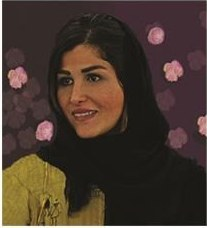
- Born1979
- FromTehran, Iran
- Works15
- Dated2010–2015
- CatalogueContemporary Iranian Art, Tehran 2017
Works15 artworks


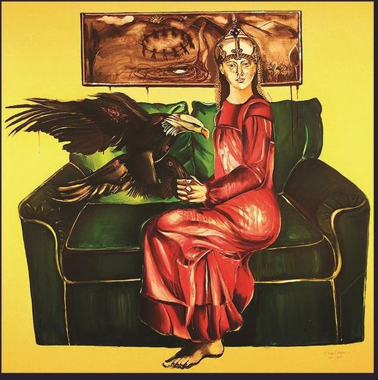

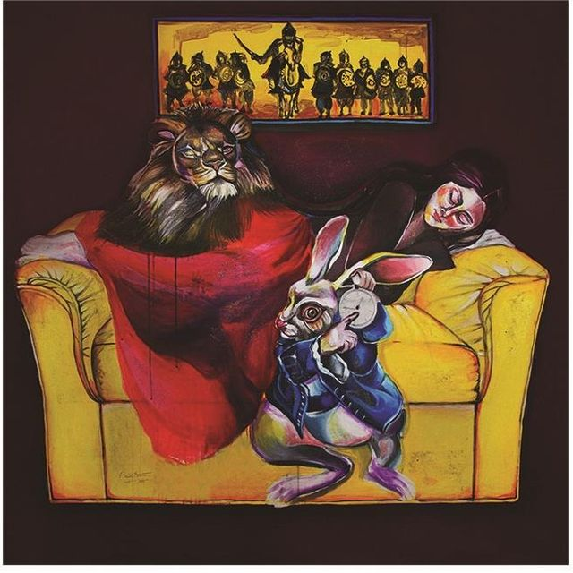

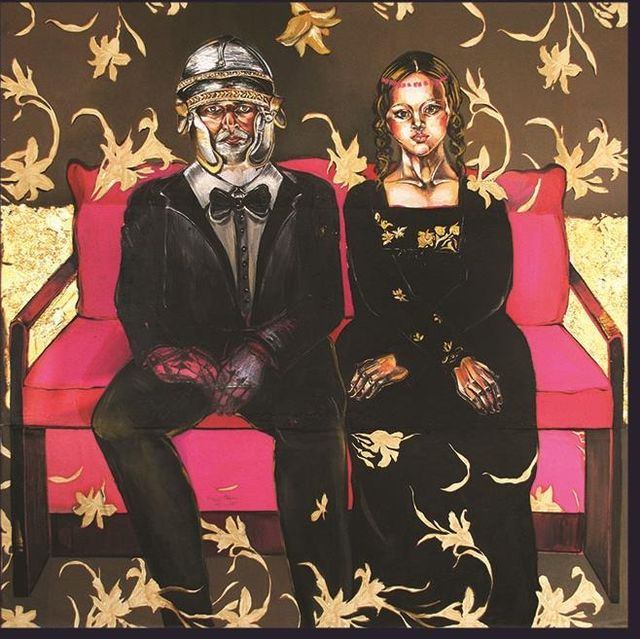

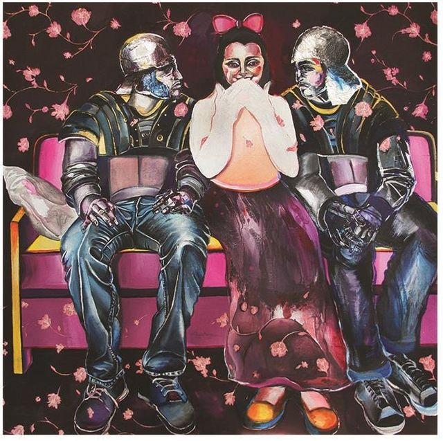

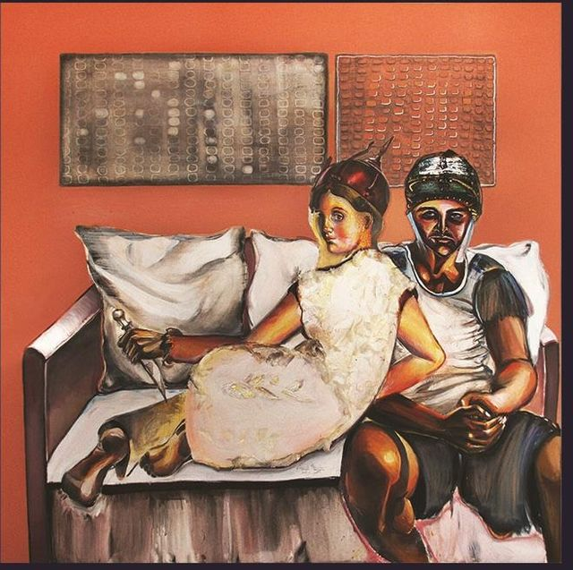

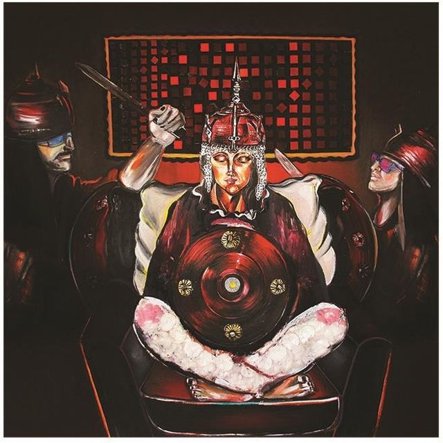

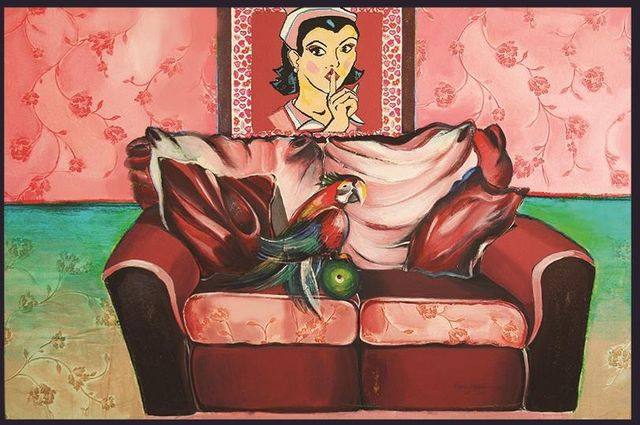

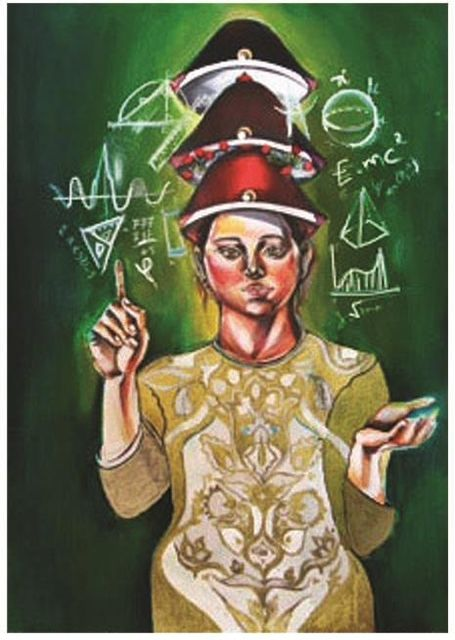

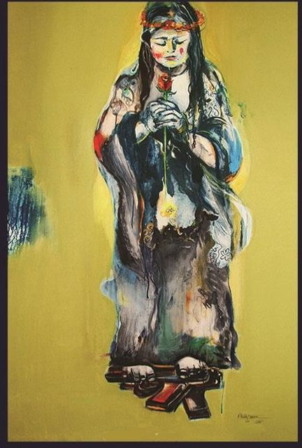

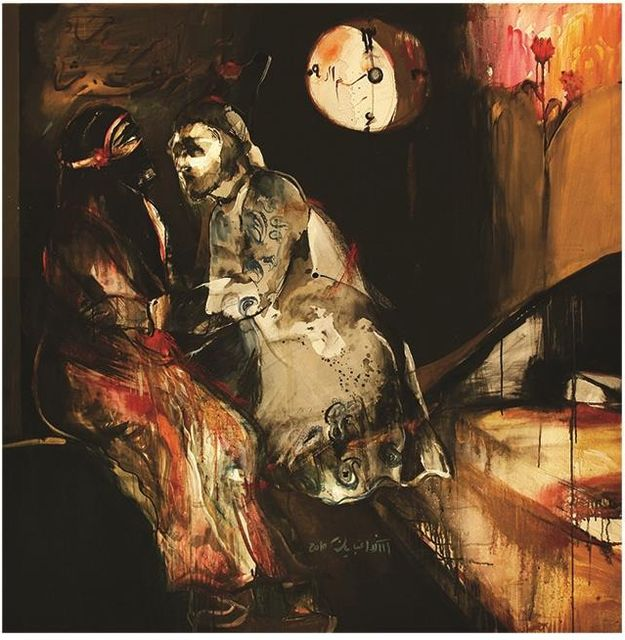

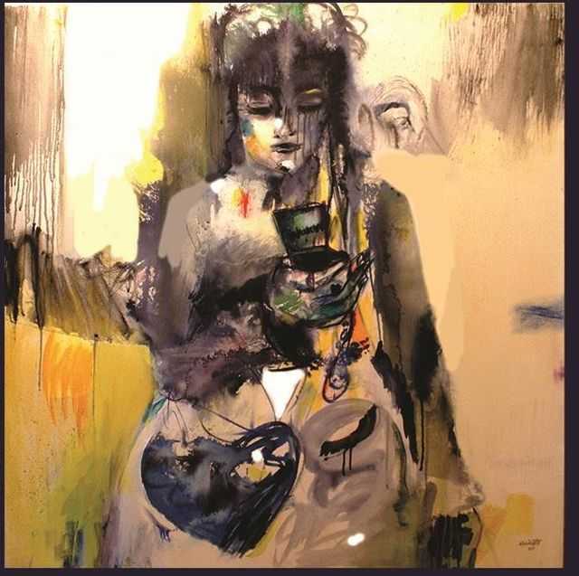

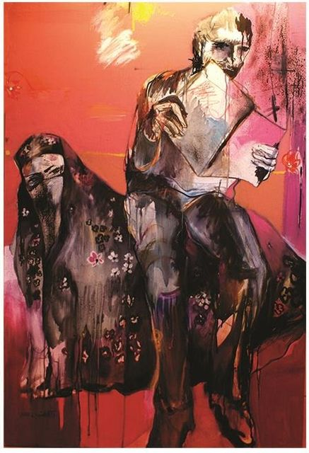

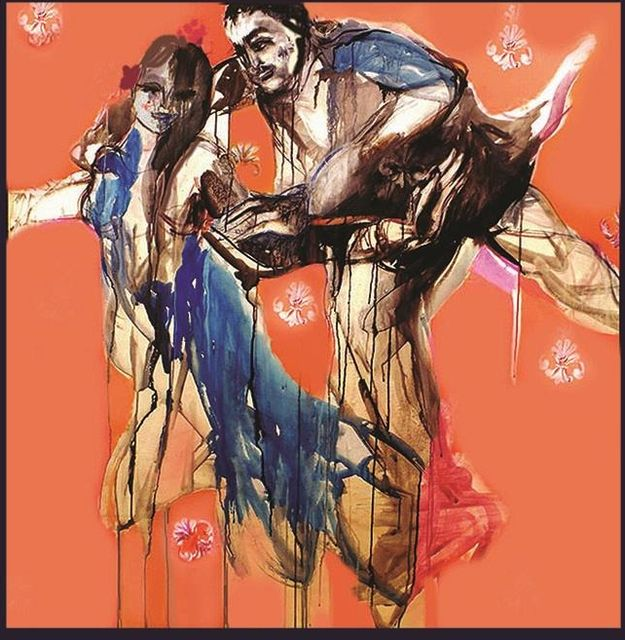

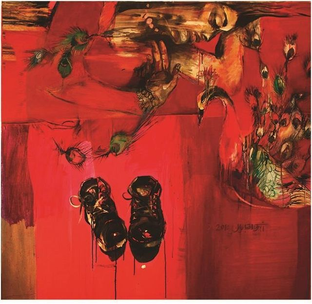
History of experienceBiography · education · exhibitions · awards
Education
- 2008Master Degree in Painting, Azad University of Art & Architecture|Tehran – Iran
- 2005Master Degree in Visual Arts, LABA University|Florence-Italy
- 2003Bachelor in painting, Azad University of Art & Architecture|Tehran – Iran
- 1997Diploma in Art|Tehran – Iran
Memberships
- Member of Iranian Association of Painters
Solo exhibitions
- 2015Etemad Gallery|Tehran – Iran
- 2014Emergeast Gallery|Dubai
- 2011Homa Art Gallery|Tehran – Iran
- 2009Homa Art Gallery|Tehran – Iran
- 2004Barg Art Gallery|Tehran – Iran
Group exhibitions
- 2015Seyhoun Art Gallery|Los Angeles- Usa
- 2015Emergeast Art Auction|Dubai
- 2015Azad Art Gallery|Tehran – Iran
- 2015Art Space Gallery|London
- 2015Emergeast Art Auction at DIFC|Dubai
- 2014Iranian Artists Forum|Tehran – Iran
- 2013Iranian Artists Forum|Tehran – Iran
- 2012Iranian Artists Forum|Tehran – Iran
- 2011Iranian Artists Forum|Tehran – Iran
- 2010Iranian Artists Forum|Tehran – Iran
- 2009Mehrva Gallery|Tehran – Iran
- 2008Golestan Art Gallery|Tehran – Iran
- 2007The Art Expo of Society of Iranian Painters|Tehran – Iran
- 2007Participating In The First Dr. Soundozi Drawings Festiva|Tehran – Iran
- 2006The 4th International Biennale of Islamic World Contemporary Painting|Tehran – Iran
- 2006Gallery of The Iranian Artist|Tehran – Iran
- 2006LABA gallery-Video Art|Florence-Italy
- 2006LABA gallery|Florence-Italy
- 2005Arte Contemporanea,Villa PoggioReale Rufina|Florance-ltaly
- 2003Banafsheh Gallery|Tehran – Iran
- 2002Laleh Gallery|Tehran – Iran
- 2002Arasbaran Art Gallery|Tehran – Iran
- 2001Afrand Gallery|Tehran – Iran
Source: the Sobhan Gallery artist catalogue “Sobhan Gallery. C. Azadeh Etebarian.pdf”.